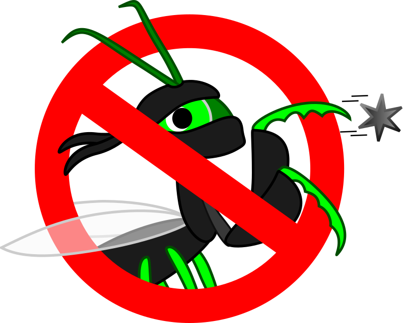

| 1 2 3 4 5 6 7 8 9 10 11 12 13 14 15 16 17 18 19 20 21 22 23 24 25 26 27 28 29 30 31 32 33 34 35 36 37 38 39 40 41 42 43 44 45 46 47 48 49 50 |
| 20:29 | STATUS |  Tests will run later! |
| 20:29 | FIXED |  Some faulty treasure chests |
| 20:27 | MAP |  Level #051 up to #060 completely designed |
| 20:12 | NOTE |  It's not unthinkable more enemies could be added to the Black Tower, but it's not yet final. |
| 20:11 | MAP | Added to Black Tower |
| 20:11 | FOE |  Wind Elemental |
| 20:11 | ART |  Wind Elemental |
| 18:00 | STATUS | Calling it for now! |
| 18:00 | BACKUP |  Running! |
| 17:59 | LICENSE |  All info up-to-date! |
| 17:57 | JUDGMENT |  All is fine! |
| 17:51 | SPELLANI |  Phoenix now has sparkle effect |
| 17:49 | NERF |  HP Mountain king brought down (it was expected this would be needed). |
| 17:40 | TEST |  Take TWO! |
| 17:40 | FIXED | Just as I thought! ;) |
| 17:39 | BUG |  Boss ignores me when I try to activate it. |
| 17:20 | FAILURE |   Make, a program that won a prize turned out to gimme an epic fail :P |
| 17:20 | FIXED | Item reference error for three items fixed! |
| 17:05 | FAILURE | A certain internet provider called me.... LOSERS! |
| 17:05 | TEST | Well, all I can do now, is check if it all works.... |
| 17:01 | CONFIG |  Music properly set for the boss fight! |
| 16:58 | COSMETIC |  If the boss' code name (the file name in which it has been added in the JCR6 system) differs from the screen name it can now be added! |
| 16:57 | LINK |  Link config written, so the boss will start, but a few things do need to be taken in order. |
| 16:57 | CONFIRMED |  JCR6 now confirms it's being included |
| 16:56 | HUH |  For some reason, the music file for the Mountain King is missing |
| 16:53 | LUA |  IDE refresh |
| 16:52 | BOSS |  Mountain King |
| 16:23 | MAP | Prepared the map for the boss fight! |
| 16:15 | JCR6 |  rebuild music resource |
| 16:14 | NOTE | Allow me my own personal traditions, will ya? |
| 16:13 | MUSIC |  "Hall of the Mountain King" by Kevin McLeod |
| 16:11 | ART | Mountain King |
| - = 25 Nov 2018 = - |
| 20:35 | C# |  Replaced refereces to deprecated QOpen class with the new QuickStream class |
| 17:10 | FIXED | aha.... Kthura couldn't deal with LZMA encoded file tables... That takes care of a certain crash ;) |
| 13:40 | BACKUP | Running |
| 13:04 | CONFIRMED | And it works! |
| 13:04 | C# | An entry deleter has been added |
| 12:55 | TEST | I've tested the levels by playing them and I can say they've all passed the test! ;) |
| 12:54 | NOTE | I guess if I want to make a removal routine now is the time |
| 12:12 | CHECKED |  Levels #031-#040 |
| 12:11 | ITEM |  Sauerkraut |
| 10:54 | ITEM | Fan |
| 9:38 | FIXED | The annoying "bell" effect (which I really put in to make sure I'll replace the deprecated QOpen tags asap in all my C# source codes) didn't work first, but now it does. It appears that when C# does not have the right to be called a C variant after all. |
| 9:37 | OFFTOPIC |  (Or should I say Micro SCHOFT |
| 9:37 | TEST | Oh, it still does... (Sigh! MicroSoft!) |
| 9:32 | TEST | Although I do not yet see this in test results.... :-/ |
| 9:22 | NOTE | (In case you haven't yet figured it out.... vUpdate means "version Update"). |
| 9:21 | C# | TrickyUnits vUpdate |
| 9:21 | C# | And I've documented all QuickStream functions properly now for the Visual Studio auto documentation system. |
| 9:20 | C# | There is no specific term yet set for when QOpen will disappear completely. |
| 9:19 | C# | (Only exception are the NoEndian, LittleEndian, BigEndian constants. I could also make them go off, but that would be a fool's job, and besides, I doubt there are many programs around specifically call those alone). |
| 9:18 | C# | Since it will be one hell of a job to sort out which programs all used QOpen I've put in a deprecation note in all QOpen functions. In fact the entire QOpen class has been removed already and been replaced by a fake class that shows a deprecation note in all functions calls, and will immediately point to the (real) QuickStream class. |
| 9:16 | C# | QOpen is henceforth deprecated |
| 9:15 | C# | Forgive me that I was very new to C# when I set this up, and that's why I did this in a more neat way now. QOpen and QuickStream have now been merged to QuickStream |
| 8:44 | STATUS | And now to perform an operation in C# I was planning for quite awhile and the longer I postpone that, the more work I can get later on! |
| 8:43 | FIXED | Typo in Exodus Orb tutorial |
| 8:39 | FIXED | In the process I can also confirm the bug showing an exclamation mark when no speaker's name is set in a text box has also been fixed. |
| 8:38 | CONFIRMED | The Exodus Orbs work the way they are intended to work! |
| 8:33 | TEST | Of course, now it's time to find out if it actually works |
| 8:32 | SCRIPT |  I've written the script that should work out the Exodus Orbs |
| 8:23 | TECHNO |  (Yeah, Eclipse requires that) |
| 8:23 | LUA | IDE refresh |
| 8:21 | SCENARIO |  Not really a scenario but handled by the scenario engine, the question if you want to return or not. |
| 8:21 | TUTORIAL |  Exodus Orb |
| - = 24 Nov 2018 = - |
| 20:06 | STATUS | And by posting that last post I could perform that test and all is fine! See ya! |
| 20:06 | TEST | Although one last test will be done now |
| 20:04 | STATUS | Calling it a day! |
| 20:03 | CYNTHIA |  I promised myself to resume Cynthia Johnson as soon as the Black Tower is done... that is the Atlantis puzzles will be done then... Condtion is that I have internet working then, as Cynthia Johnson is very heavily reliant on Anna, and debugging will be impossible as long as the internet is down! |
| 20:02 | STATUS | Tomorrow I'll have less time (as normal on Sundays as I often have visitors then), but I can try to get the Exodus Orbs to work then as I feel that that are rather important in a Dungeon like the Black Tower. |
| 20:01 | TODO |  Having a break is also important you know.... |
| 20:00 | TODO | Have dinner |
| 20:00 | DONE |  Began cooking |
| 19:59 | GITHUB |  The repositories I COULD update have been updated (the broken ones.... sorry, I need the internet to repair those, I'm afraid). |
| 19:55 | STATUS | Well, I've set up the backup sequence due to the loads of work I did in a short time. |
| 19:48 | OFFTOPIC | (If you want an alternative for MySQL, install MariaDB. It's the alternative for MySQL like LibreOffice was for OpenOffice when ORACLE owned it). |
| 19:47 | DATABASE |  I've converted my personal databases I made in MySQL into MyData.... MySQL has compatibility issues, and not to mention now that MySQL is in hands of ORACLE (of all the companies) it's better for everybody in the computer world if it's boycotted out of the ICT world A.S.A.P. |
| 19:40 | C# | I do need to add some more stuff later, but for now this is enough! ;) |
| 19:40 | CONFIRMED | IT WORKS! |
| 19:39 | TEST | Let's test it! |
| 19:39 | C# | I added a command history clear routine |
| 19:36 | JUDGMENT | that is much better... I only need to get used to this, but that should be a matter of time! |
| 19:36 | C# | entry reverse |
| 19:31 | C# | And now for some re-adjusting this devlog itself |
| 19:28 | MAP | And the same can be said for Level #060 |
| 19:28 | MAP | I did design level #100 already, but there is no way to reach it.... YET! |
| 19:22 | ITEM | Ambrosia |
| 19:20 | MAP | All Exodus Orbs have been placed, however trying to activate them will (for now) crash the game! |
| 19:07 | UNDESIRABLE |  Doh! Bundle issue.... The Kthura Map Editor can't handle an lzma packed file table inside a JCR6 file.... |
| 19:06 | JCR6 | Exodus Orb formed into a package (or bundle). |
| 19:03 | ART | Exodus Orb |
| 18:51 | PLAN |  For the Black Tower I plan to put in "Exodus Orbs" each 10 levels. These will simply take you out of the Black Tower back to the world map. |
| 18:00 | STATUS | LATERZ.... |
| 18:00 | BACKUP | In the meantime I'll run the backup utility |
| 17:59 | STATUS | It's six o' clock and time for the news |
| 17:59 | CONFIRMED | IT'S FIXED!!!! |
| 17:48 | TEST | Or is this take EIGHT already? |
| 17:48 | TEST | Let's go into TAKE SEVEN |
| 17:47 | FIXED | I think I found the line causing this cockroach, and I fixed that... of course, now to see if the cockroach is fixed as a whole. |
| 17:46 | COCKROACH |  The cockroach still persists, but I believe this shone a bit of a light on things |
| 17:37 | DEBUG | Let's now debug this in a different manner! |
| 17:36 | FIXED | At least I fixed one Syntax Error, but that was in code not triggerred right now, thanks to this cockroach, but hey, better late than never... |
| 17:34 | DUMP | There is no tagpostdraw function in this status
There is no tagpostdraw function in this status
There is no tagpostdraw function in this status
There is no tagpostdraw function in this status
There is no tagpostdraw function in this status
There is no tagpostdraw function in this status
Not a single letter about the PRE draw functions which should cause the green color in the first place... Odd
|
| 17:29 | COCKROACH | We komen er wel, maak je geen zorgen Is het niet vandaag, dan is het wel morgen :-/ |
| 17:28 | TEST |  Let's go into TAKE SIX |
| 17:28 | DEBUG | MOAR debugging is then in order |
| 17:25 | CONCLUSION |  I was wrong, the heroes and the enemies are both processed, it's just that the poisoning routine may somehow be ignored. |
| 17:11 | TEST | Let's go into TAKE FIVE! |
| 17:11 | DEBUG | This debug line will slow down the system like crazy and generate tons of unwanted data, so it needs to be deactivated as soon as it provided me answers, but I have the feeling it may only affect the heroes and not the foes, and this line will have to confirm or deny that. |
| 17:09 | COCKROACH | But the poison issue remains |
| 17:09 | CONFIRMED | At least the script does no longer show stuff that no longer exists |
| 17:08 | FIXED | and also a spot where should be impassible |
| 17:07 | FIXED | A few map fixes on things where the map should not be impassible |
| 16:56 | NOTE | I do need to be able to clear the history as there's a lot of junk there now :P |
| 16:55 | TEST | Let's go into TAKE FOUR! |
| 16:55 | FIXED | Well this could fix those tons of errors then, and the combat engine would as extra bonus even stop trying to draw enemies which have been removed. |
| 16:51 | INVESTIGATION |  Ah, there's also a draworder reference? I never knew that.... I must have forgotten that! |
| 16:48 | CONFIRMED | I've confirmed that the death routine does erase BOTH references to the enemy when it's killed, since this starts once an enemy has been killed |
| 16:46 | DUMP | FOE_1
NOTE!!!
There is no fighter tagged
FOE_2
NOTE!!!
There is no fighter tagged
FOE_3
I wonder what THIS is!!! :-/
|
| 16:44 | DEBUG | Now I didn't find any monsteres poisoning me, but I did see something else in my debug log! |
| 16:35 | DEBUG | A debug line has been added to find out why that is! |
| 16:35 | BUG | I did not see anyone turn green at all |
| 16:28 | LINUX |  I mean I cannot be sure that Linux didn't damage my repositories |
| 16:28 | GITHUB | It appears the repository for the libraries still works. Then again I didn't touch that one in my last Linux session on my work device, so I cannot be sure! |
| 16:25 | DEBUG | I also made the debug log put in some enters in the HTML source, making copying stuff to this Devlog a bit easier on myself |
| 16:23 | TEST | Let's go into TAKE THREE! |
| 16:23 | NOTE | (Oh wait, for me that was above, but for you it's below, due to the way this DevLog generates its output... My mistake). |
| 16:22 | FIXED | Dirty fix straight from Hell to fix the issue above! |
| 16:21 | HUH | And copy and paste also ain't what it used to be, is it? |
| 16:21 | HUH | !!FATAL ERROR!!!
Error
[string "Script/Subs/Error.lua"]:143: character error
Traceback
[string "Script/Subs/Error.lua"]:59: in function <[string "Script/Subs/Error.lua"]:24>
[C]: in function 'error'
[string "Script/Subs/Error.lua"]:143: in function 'TrickAssert'
[string "Script/Flows/combat.rel/com_statuschanges.lua"]:46: in function 'statuses'
[string "Script/Flows/combat.rel/com_statuschanges.lua"]:86: in function 'StatusTagDRAW'
[string "Script/Flows/combat.rel/com_statuschanges.lua"]:96: in function 'StatusTagPstDraw'
[string "Script/Flows/combat.rel/com_foecompiler.lua"]:175: in function 'DrawFoe'
[string "Script/Flows/combat.rel/com_foecompiler.lua"]:181: in function 'DrawFoes'
[string "Script/Flows/combat.rel/com_main.lua"]:60: in function 'basedraw'
[string "Script/Flows/combat.rel/com_main.lua"]:68: in function 'odraw'
[string "Libs/killcallback.rel/kcb.lua"]:77: in function 'draw'
[C]: in function 'xpcall'
tag = FOE_1
|
| 16:04 | TEST | Let's go into TAKE TWO! |
| 16:04 | FIXED | Illegal Function Definition |
| 15:57 | TEST | So let's go into TAKE ONE! |
| 15:55 | FIXED | This SHOULD fix the entire issue, but of course, this has not yet been tested, so ya never know! |
| 15:55 | SCRIPT | I've written a script for more precise status handling, as it seems the original version was indeed pretty bad |
| 15:37 | INVESTIGATION | I am currently investigating the "everybody looks green when somebody is poisoned" bug |
| 15:22 | CONFIRMED | Key removal works |
| 15:18 | PLAN | I am toying with some transcompilers for Lua (such as MoonScript, but where MoonScript is downright ugly and unreadable I plan for one that may require more typing but making things easier in the end) and then case issues could also belong to the past! |
| 15:17 | LAZY |  2 case versions of console.write |
| 15:12 | FIXED | Case error |
| 15:06 | FIXED | Fixed that! |
| 15:06 | STUPIDITY |  Jeroen, you dork! You forgot to link the routine to the start-up sequence! |
| 15:02 | OFFTOPIC | And this is entry number #9000! Do I really have so much interesting stuff to say, or am I simply talking too much? |
| 15:01 | OFFTOPIC | (And really... I hope it will only be ONE take this time!) |
| 15:01 | TEST | Take ONE! |
| 14:58 | DEBUG | And to make my life easier while debugging, I've added some debug instructions for the console |
| 14:58 | SCRIPT | The key removal script for keys on wrong floors has been set up |
| 14:50 | CONFIG | I've configured the settings for the floors where the keys should be located, however the script for making this happen has not yet been written. |
| 14:47 | DONE | Taken a shower... |
| 14:46 | STATUS | Indeed the game crashes when you try to pick up the key, but that's not important at this very moment |
| 14:13 | JUDGMENT | All levels up to #040 have been approved.... Way to go, Jeroen! |
| 14:02 | ITEM | Battery |
| 14:00 | FIXED | A chest causing a crash on floor #038 has been fixed |
| 13:44 | STATUS | And let's now bring the game to the state that allows me to test if the key disappears (once that's scripted) when not playing at skill level 1 |
| 13:42 | MAP |  Since floor #037 was empty I placed two chests there... (I must have forgotten that earler) |
| 13:40 | NERF | All spells Nino can learn will from now on require higher levels (and this goes for ALL difficulty settings!) |
| 13:39 | ITEM | Rock |
| 13:37 | FIXED | For allies the bug is fixed, though |
| 13:30 | NOTE | And another note... If this works I will put Vitalize for a higher level as I never indended Nino to learn such a crucial spell in such an early stage of the game, mind you! |
| 13:30 | NOTE | (If this works I can only be sure for the multi-target moves meant for allies.... If multi-target moves meant for enemies do the job will have to be tested later!) |
| 13:29 | TEST | Of course, ya never know unless you test, so here goes.... |
| 13:28 | SCRIPT | I've modified a few things and hopefully this fixes the issue |
| 13:26 | DUMP | !!FATAL ERROR!!!
Error
[string "Script/Flows/combat.rel/flw_playerinput.lua"]:81: bad argument #1 to 'pairs' (table expected, got nil)
Traceback
[string "Script/Subs/Error.lua"]:59: in function <[string "Script/Subs/Error.lua"]:24>
[C]: in function 'pairs'
[string "Script/Flows/combat.rel/flw_playerinput.lua"]:81: in function 'CheckCanLearn'
[string "Script/Flows/combat.rel/flw_playerinput.lua"]:178: in function <[string "Script/Flows/combat.rel/flw_playerinput.lua"]:98>
[string "Script/Flows/combat.rel/com_main.lua"]:71: in function 'odraw'
[string "Libs/killcallback.rel/kcb.lua"]:77: in function 'draw'
[C]: in function 'xpcall'
|
| 13:15 | CLEANUP |  Eclipse (and that was about time) |
| 13:13 | LUA | IDE refresh |
| 13:11 | LICENSE | Updated |
| 12:36 | STATUS | I'll be back soon to investigate the multi-target bug Nino suffers from |
| 12:34 | SYSTEM |  I also need to note that I may soon need to replace my backup tool. Why? Because it's entirely set up to fill the needs of a Unix based system (and then only when auto-mounts are done the way Mac does it) and that simply won't do anymore once my computer has been replaced. |
| 12:31 | CONFIG | It appeared I forgot some crucial stuff in dealing with with the backup tool.... |
| 9:37 | STATUS | See you soon |
| 9:37 | MEDICAL |  I hope you understand I have a real life too to attend to and that I must prevent myself from overworking myself |
| 9:36 | TODO | And take a brief break |
| 9:35 | TODO | Not to metion feeding Kitty (my cat). |
| 9:35 | TODO | And take a shower next |
| 9:35 | BACKUP | I'll fire up the backup tool first |
| 9:34 | MEDICAL | I do feel better than yesterday, however I do realize I do need to slow down for a bit, and that will show in how much i can do today. |
| 9:33 | STATUS | Before I work out this key though, I'll first get things done on Nino's crash upon learning "Vitalize", not to mention that fixes the learning of all multi-target spells/abilities as they will all suffer from the same issue. |
| 9:31 | C# | Recompiling Devlog |
| 9:31 | C# | That means all work here is done ;) |
| 9:31 | FIXED | And I also removed these needless errrors in the updating of the entry list |
| 9:27 | BUG | I don't know why DevLog keeps throwing "ERROR! Unknown content command tag 101
ERROR! Unknown content command tag 63" at me, but my guess is that something went wrong during the compilation from old to new... Nothing I can do about that now, and it's not that important either! |
| 9:26 | FIXED | Indeed |
| 9:24 | FIXED | Hopefully this has been fixed, but I can (of course) never be sure! |
| 9:17 | STATUS | Let's fix that one first! |
| 9:16 | BUG | Aha! I see the exporter is still trying to put in deleted entries... This is (of course) not supposed to happen.... |
| 9:14 | STATUS | This key comes later, actually and will for appear on all difficulty settings, but that will change in a later stage |
| 9:13 | MAP | The key is placed onto floor #040, however the game will crash when you touch it now. |
| 9:05 | SYSTEM | Well when ISP Z. illegally blocks my way to the internet an other ISP has to work it out for me and this has happened. However this costs time (which is normal. That Z. thinks they can whoop their wasses with the law is not their problem after all), and when everything goes according to planning my internet should work again at December 10th, this year! |
| - = 23 Nov 2018 = - |
| 17:12 | STATUS | Maybe I'll be back later! |
| 17:10 | PHANTASAR |  Another chapter! |
| 16:29 | FIXED | I can use a telephone again.... |
| 12:26 | PLAN | Ryanna will remark that the reward for the other (optional) floors all the way up to #100 is mostly not worth it. My plan is to put 3 ambrosias there. An item healing all HP and curing all status changes including death. Speak for yourself if that is worth it :P |
| 12:24 | PLAN | (Yeah, and Ryanna will make a nasty remark about not needing to take all 100 floors). |
| 12:23 | PLAN | It's pretty much final now that when you play easy mode the key will be located on floor #040 When you play the casual mode it will very likely be floor #050, although #060 is possible. That leaves either floor #060 or #080 for the hard mode, depending on my future mood. |
| 12:21 | DONE | Taken a shower and I feel much better, already! |
| 12:21 | DOCUMENTATION |  Some legal documents properly set up |
| 12:01 | NOTE | (This was actually pretty relaxing for me). |
| 12:01 | PHANTASAR | Another chapter |
| 11:51 | ART | Key |
| 6:19 | MEDICAL | Thanks to a certain (malicious) internet company I am now overstressed and completely unable to do any work at all! I hope I can at least send you an update of this Devlog A.S.A.P. |
| 0:42 | TODO | I hope I can find a solution for my broken Git repositories, asap. |
| 1 2 3 4 5 6 7 8 9 10 11 12 13 14 15 16 17 18 19 20 21 22 23 24 25 26 27 28 29 30 31 32 33 34 35 36 37 38 39 40 41 42 43 44 45 46 47 48 49 50 |